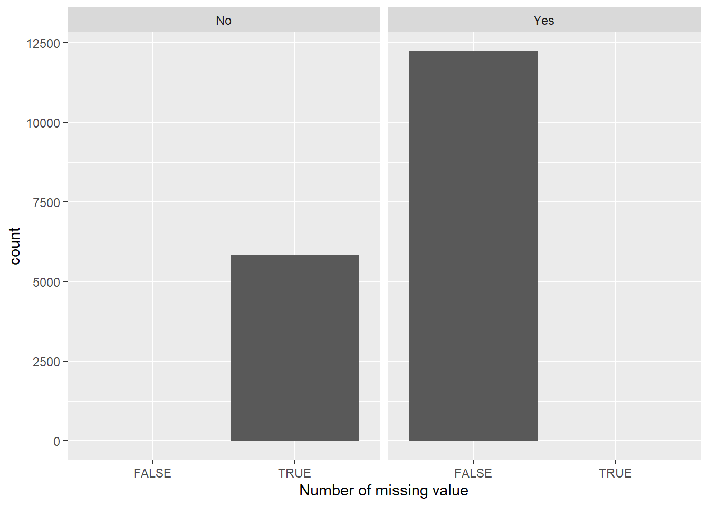

── Attaching core tidyverse packages ──────────────────────── tidyverse 2.0.0 ──
✔ dplyr 1.1.3 ✔ readr 2.1.4
✔ forcats 1.0.0 ✔ stringr 1.5.0
✔ ggplot2 3.4.3 ✔ tibble 3.2.1
✔ lubridate 1.9.2 ✔ tidyr 1.3.0
✔ purrr 1.0.2
── Conflicts ────────────────────────────────────────── tidyverse_conflicts() ──
✖ dplyr::filter() masks stats::filter()
✖ dplyr::lag() masks stats::lag()
ℹ Use the conflicted package (<http://conflicted.r-lib.org/>) to force all conflicts to become errors2 Data
Our main data source will be six months of data about Kickstarter crowdfunding projects, from December 15, 2013 to to June 15, 2014, collected using kickspy by Professor Chandan Reddy. The dataset is available on this website: http://dmkd.cs.vt.edu/projects/crowdfunding/dataset.htm, and we will be using the 18k_Projects.csv file. The dataset was used in research papers, including https://creddy.net/papers/WSDM16b.pdf. Projects that were canceled, suspended, or had less than one backer and $100 as pledged amount were excluded from this dataset. Thus, we will not be able to gain any insights on these types of crowdfunding projects. Data was also collected from social media sites by Professor Reddy’s research group, where it was available. Here, the main issue is that there may not be data values available for some of the projects, if they were not shared on social media.
Another issue that we found with the data was that there were some duplicate rows, resulting in multiple instances of a project ID, even though the IDs were supposed to be distinct. It seems like this was a mistake made while collecting the data. There were 74 project IDs that were repeated, so as a data preprocessing step, we will have to go through and remove these duplicate values. Some of these duplicate rows also have slightly different values for certain columns, so out of the duplicated rows, we decided to keep the one with the lowest number of missing values.
The data is formatted as a csv file separated with tabs, and it has not been updated since the initial collection. We will download the data locally and read it using R. There are 18,142 rows and 35 columns in the dataset. It contains information about the Kickstarter projects, including the ID, name, URL, state (failed or successful), currency in which the donations were raised, the category of the projects, the creator of the project, location, the number of updates, the number of comments on the page, rewards (collected by the backer if the project is successful), the goal (or the target amount of money that the creator hopes to raise), the amount of money pledged, the number of backers, the start and end dates of the project, the duration of the project in days, columns to indicate whether the project has a video, and the longitude and latitude coordinates. Moreover, there is information about the creator, including their social media and bio pages.
2.1 Description
To understand the different types of projects that are on Kickstarter, we could look at the projects by category. Whether the project is successful or not is indicated by the State column, so we can facet based on State to determine if there are distinguishing characteristics specific to the projects that are successful. The dataset also provides information about the creator, such as the number of Facebook friends that they have if they’ve connected their Facebook to their page, and the number of Facebook shares for their project. For the categorical variables, such as whether or not the project page is connected to Facebook and whether or not the project page has a video, we can create mosaic plots to see if these features are related to the average success rate of the project.
The dataset also contains information about the creator pages, including the number of other projects that the creator has created, as well as the amount of content of these pages (including the number of images and videos, the number of words in the Description and Risks and Challenges sections, and the number of FAQs). We are also given information about how many backers there were for each project, as well as the number of Facebook shares throughout the course of the project and the total duration of the project. These are all numerical quantities, for which we could create data visualizations. In particular, we could look at how these numerical variables are related to the final amount pledged for each of these projects.
We can also use the Goal column to visualize the target amount of donations for the projects, as well as the Pledged column to display the amount of money that the backers promise to give (if the project is successful). Since different currencies are used for the projects, we would have to standardize to USD.
Since we are given the locations the projects, we can plot the projects on a world map. This can give us an idea of where in the world these projects are located, and it allows us to see the regions where Kickstarter is more commonly used.
2.2 Data Pre-processing
First, we read the raw data.
Code
raw_df <- read_tsv("https://raw.githubusercontent.com/1819398633/crowd_funding/master/18k_Projects.csv", show_col_types = FALSE)
raw_df <- raw_df %>% select(c(-Url, -`Start Timestamp (UTC)`, -`End Timestamp (UTC)`))We observe that there are 5 duplicated rows and 64 duplicated IDs.
Code
# duplicate rows (5)
nrow(raw_df) - nrow(raw_df %>% distinct())[1] 5Code
# duplicate ID: 64
nrow(raw_df %>% distinct()) - nrow(raw_df %>% distinct() %>% distinct(Id, .keep_all=TRUE))[1] 64Remove duplication. For samples with the same ID, select the one with fewer missing values.
Code
clean_df <- raw_df %>% distinct()
# get NA number for each row
clean_df <- clean_df %>%
mutate(na_num = rowSums(is.na(.)))
# for each ID, select the one with fewer NAs
# Keep only one for those with same number of NAs
clean_df <- clean_df %>%
group_by(Id) %>%
slice_min(na_num, n=1) %>%
distinct(Id, .keep_all=TRUE) %>% as_tibble()
# 69 duplications removed
# nrow(raw_df) - nrow(clean_df)Check feature data types and ensure that the types are already converted.
Code
# glimpse(clean_df) %>% head()
# already converted
# too long, output not included hereTransform currency features into the same unit (USD) and apply log transformations.
Code
clean_df <- clean_df %>% mutate(Pledged_USD=case_when(Currency=="USD"~Pledged,
Currency=="CAD"~0.74*Pledged,
Currency=="AUD"~0.66*Pledged,
Currency=="GBP"~1.26*Pledged,
Currency=="EUR"~1.08*Pledged,
Currency=="NZD"~0.61*Pledged))
clean_df <- clean_df %>% mutate(Goal_USD=case_when(Currency=="USD"~Goal,
Currency=="CAD"~0.74*Goal,
Currency=="AUD"~0.66*Goal,
Currency=="GBP"~1.26*Goal,
Currency=="EUR"~1.08*Goal,
Currency=="NZD"~0.61*Goal))
clean_df <- clean_df %>% mutate(log_pledged_usd=log(Pledged_USD), log_goal_usd=log(Goal_USD)) We noticed that the spacial coordinates were missing for many of the observations. Thus, we gathered the locations where the coordinate values were not null, and we also used ChatGPT and Google to get the coordinates of locations where no coordinates were provided. We compiled this into the location_coordinates.csv file. To get the spacial coordinates of the locations for data visualizations later, we joined this file with our original dataset and filled in the coordinate values, where available.
Code
locations_cleaned <- read.csv("https://raw.githubusercontent.com/1819398633/crowd_funding/master/location_coordinates.csv")
clean_df <- left_join(clean_df, locations_cleaned, by="Location", multiple="first") %>%
mutate(Latitude=ifelse(is.na(Latitude), latitude, Latitude),
Longitude=ifelse(is.na(Longitude), longitude, Longitude)) %>% select(-latitude, -longitude)Check for outliers and abnormalities: We checked the goal amount. There is a project with extreme high goal value of 100 million USD, 0 updates and only 1 dollar pledged. This is 10 times larger than the second largest Goal value and clearly an outlier, so we removed it.
Code
# normal
clean_df %>% slice_min(n=10, order_by = Goal_USD) %>% pull(Goal_USD) [1] 66 74 74 74 74 74 99 100 100 100 100 100 100 100 100 100 100 100 100
[20] 100 100 100 100 100 100 100 100 100 100 100 100 100 100 100 100 100 100 100
[39] 100 100 100 100 100 100 100 100 100 100Code
# outlier exist
clean_df %>% slice_max(n=10, order_by = Goal_USD) %>% pull(Goal_USD) [1] 1.00e+08 8.00e+06 7.00e+06 6.10e+06 6.00e+06 5.00e+06 3.63e+06 3.00e+06
[9] 2.96e+06 2.80e+06Code
clean_df %>% slice_max(n=1, order_by = Goal_USD)# A tibble: 1 × 37
Id Name State Currency `Top Category` Category Creator Location Updates
<dbl> <chr> <chr> <chr> <chr> <chr> <chr> <chr> <dbl>
1 1.81e9 The … fail… USD Film & Video Shorts Chris … Denver 0
# ℹ 28 more variables: Comments <dbl>, Rewards <dbl>, Goal <dbl>,
# Pledged <dbl>, Backers <dbl>, Start <date>, End <date>,
# `Duration in Days` <dbl>, `Facebook Connected` <chr>,
# `Facebook Friends` <dbl>, `Facebook Shares` <dbl>, `Has Video` <chr>,
# Latitude <dbl>, Longitude <dbl>, `Creator Bio` <chr>,
# `Creator Website` <chr>, `Creator - # Projects Created` <dbl>,
# `Creator - # Projects Backed` <dbl>, `# Videos` <dbl>, `# Images` <dbl>, …Code
clean_df = clean_df %>% filter(Goal_USD < 1e7)Rename columns, select necessary columns, and store the clean data for plotting.
Code
clean_df <- clean_df %>% rename(Top_Category = `Top Category`)
# clean_df %>%
# select(c(-`Creator Bio`,
# -`Creator Website`,
# -na_num,
# -Pledged,
# -Goal)) %>%
# write_csv("18k_Projects_clean.csv")2.3 Missing value analysis
For the purpose of the analysis, we use data generated by the code above with ancillary features.
The table below shows the number of missing values in the columns.
Code
col_na = colSums(is.na(clean_df)) %>%
sort(decreasing = TRUE)
col_na = col_na[col_na > 0]
col_na Creator Website Facebook Friends
6604 5837
Creator - # Projects Backed Latitude
4239 85
Longitude # Videos
85 85
# Words (Risks and Challenges)
85 The latitude and longitude columns have the most missing values, followed by the creator website, Facebook friend number, creator’s number of projects backed, the number of videos on the page, and the number of words in the “Risk and Challenges” section. It seems that the missing values of (Latitude, Longitude) and (# Videos, # Words (Risks and Challenges) feature pairs appear at the same time.
To have a further look, we plot the missing value patterns:
Code
clean_df_miss = clean_df %>%
select (col_na %>% names())
names(clean_df_miss) = c('Lat.', 'Long.', 'Cre.Web.', 'FB.Con.', 'Cre.numB', 'num.Video', 'num.WoRC')
clean_df_miss %>%
plot_missing(percent = TRUE)Scale for y is already present.
Adding another scale for y, which will replace the existing scale.
Scale for y is already present.
Adding another scale for y, which will replace the existing scale.
For features, there are around 50% of the (Latitude, Longitude) pairs missing. Creator Website and Facebook Connected are also common missing values.
For data rows, most of them (around 25%) are missing the Facebook Connected information only. This is reasonable for the missing values of the creator’s Facebook and creator’s website, as they may not exist or are not shown on the crowdfunding page.
We also identified several patterns:
First, the graph shows that (Latitude, Longitude) and (# Videos, # Words (Risks and Challenges) missing feature pairs appear at the same time. Upon further inspection, we find that it is very similar to `Location`, as the (Latitude, Longitude) coordinates are usually the same for a location. For spacial analysis purposes, we decided to use `Location` only.
Second, we find that the missing values of # Videos, # Words (Risks and Challenges) appear together with the missing values of `Creator Website`, Latitude, and Longitude. Such cases are rare, and the values are only missing for projects with end times from January 2014 to March 2014. We checked the crowdfunding webpages and found that the data is accessible. Therefore, manually error or technical issue in data collecting may be the reason for these missing values.
Here’s the project start and end date ranges.
Code
# get start time range
clean_df %>%
filter(`# Videos` %>% is.na()) %>%
select(Start, End) %>%
arrange(Start) %>%
slice(c(1,n())) %>% pull()[1] "2014-01-17" "2014-03-07"Code
# get end time range
clean_df %>%
filter(`# Videos` %>% is.na()) %>%
select(Start, End) %>%
arrange(End) %>%
slice(c(1,n())) %>% pull()[1] "2014-01-14" "2014-03-12"Third, Facebook Friends is missing if and only if Facebook Connected is False, because the Facebook friend’s information of the creator is not accessible if we don’t know the creator’s Facebook from the webpage.
The bar chart shows this result.
Code
clean_df %>%
ggplot(aes(x = is.na(`Facebook Friends`))) +
geom_bar() +
facet_wrap(.~`Facebook Connected`) +
labs('Number of missing values in "Facebook Friends"') +
xlab("Number of missing value")